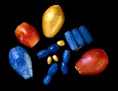

The Challenge -
Beads

Small objects are moved through the soil by ploughing or animals burrowing. When objects are moved out of their correct levels their date can only be suggested from their style. These beads look like beads from the Royal Cemetery at Ur and probably date to about 2600 B.C.
|
|